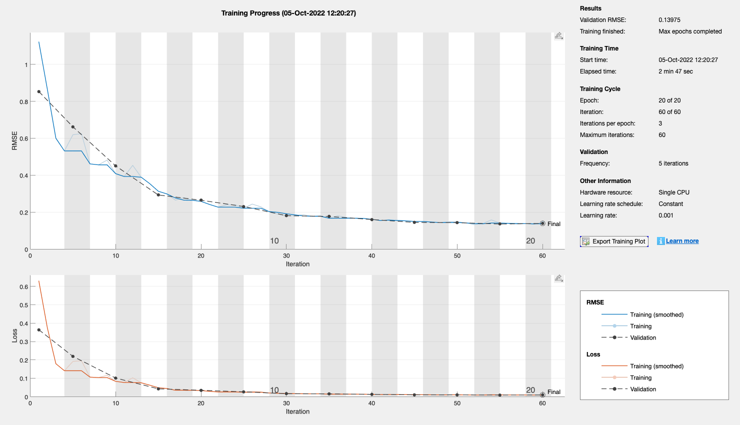
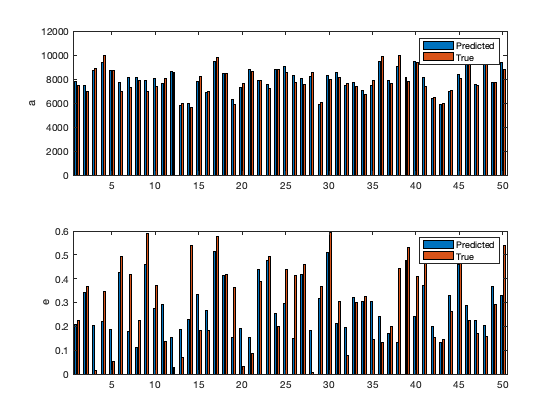

Script to train and test the Orbit LSTM
It will estimate the orbit semi-major axis and eccentricity from a time sequence of angle measurements. Loads OrbitData.mat
Contents
See also
Orbits, sequenceInputLayer, bilstmLayer, dropoutLayer, fullyConnectedLayer, regressionLayer, trainingOptions, trainNetwork, predict
s = load('OrbitData');
n = length(s.data);
nTrain = floor(0.9*n);
Set up the training and test sets
kTrain = randperm(n,nTrain); aMean = mean([s.el(:).a]); xTrain = s.data(kTrain); nTest = n-nTrain; elTrain = s.el(kTrain); yTrain = [elTrain.a;elTrain.e]'; yTrain(:,1) = yTrain(:,1)/aMean; kTest = setdiff(1:n,kTrain); xTest = s.data(kTest); elTest = s.el(kTest); yTest = [elTest.a;elTest.e]'; yTest(:,1) = yTest(:,1)/aMean;
Train the network with validation
numFeatures = 1; numHiddenUnits1 = 100; numHiddenUnits2 = 100; numClasses = 2; layers = [ ... sequenceInputLayer(numFeatures) bilstmLayer(numHiddenUnits1,'OutputMode','sequence') dropoutLayer(0.2) bilstmLayer(numHiddenUnits2,'OutputMode','last') fullyConnectedLayer(numClasses) regressionLayer] maxEpochs = 20; options = trainingOptions('adam', ... 'ExecutionEnvironment','cpu', ... 'GradientThreshold',1, ... 'MaxEpochs',maxEpochs, ... 'Shuffle','every-epoch', ... 'ValidationData',{xTest,yTest}, ... 'ValidationFrequency',5, ... 'Verbose',0, ... 'Plots','training-progress'); net = trainNetwork(xTrain,yTrain,layers,options);
layers =
6×1 Layer array with layers:
1 '' Sequence Input Sequence input with 1 dimensions
2 '' BiLSTM BiLSTM with 100 hidden units
3 '' Dropout 20% dropout
4 '' BiLSTM BiLSTM with 100 hidden units
5 '' Fully Connected 2 fully connected layer
6 '' Regression Output mean-squared-error
 Test the network
yPred = predict(net,xTest); yPred(:,1) = yPred(:,1)*aMean; yTest(:,1) = yTest(:,1)*aMean; yM = mean(yPred-yTest,1); fprintf('\nbiLSTM\n'); fprintf('Mean semi-major axis error %12.4f (km)\n',yM(1)); fprintf('Mean eccentricity error %12.4f\n',yM(2));
biLSTM Mean semi-major axis error 98.1196 (km) Mean eccentricity error -0.0174
Plot the results
NewFigure('Predictions using Feed Forward Network') subplot(2,1,1) bar(1:nTest,[yPred(:,1)';yTest(:,1)']); ylabel('a') legend('Predicted','True') subplot(2,1,2) bar(1:nTest,[yPred(:,2)';yTest(:,2)']); ylabel('e') legend('Predicted','True')
ans =
Figure (1: Predictions using Feed Forward Network) with properties:
Number: 1
Name: 'Predictions using Feed Forward Network'
Color: [0.94 0.94 0.94]
Position: [560 528 560 420]
Units: 'pixels'
Use GET to show all properties
 Copyright
Copyright (c) 2019 Princeton Satellite Systems, Inc. All rights reserved.